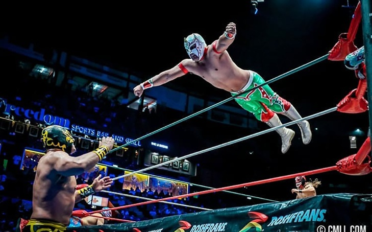

Morning / Early Afternoon: Arrival & Parque México
Arrive, unpack, and let the children stretch their legs on leafy Parque México, with its two playgrounds and charming duck pond. A perfect, gentle start as all museums are closed today.

A Family Itinerary: Pyramids, Kayaks, Tacos & Art
Arrive, unpack, and let the children stretch their legs on leafy Parque México, with its two playgrounds and charming duck pond. A perfect, gentle start as all museums are closed today.
Embark on a self-guided food tour featuring churros at El Moro, a fruit-paleta stop at La Michoacana, and a casual fish-taco dinner at El Pescadito.


Explore one of the world's great museums. Focus on the breathtaking Aztec and Maya halls to see incredible artifacts like the Stone of the Sun.
Enjoy a picnic lunch on Chapultepec Lake, followed by a row-boat rental for the 10-year-old and a walk through the vast Bosque de Chapultepec.
Pop into the famous La Panadería Rosetta for some of the city's best pastries on your way home.

An early hotel pick-up for a breathtaking balloon flight over Teotihuacán at sunrise. After a buffet breakfast, walk the ancient Avenue of the Dead and explore the pyramids.


Experience the spectacle of a Lucha Libre family show at Arena México. The kids will love the colorful masks and heroic wrestlers!
Immerse yourselves in the flavors of Mexico with a hands-on cooking class. A great activity for the whole family to learn about local ingredients and prepare dishes like salsas or mole.

After lunch, take a guided walk of the Zócalo, the Templo Mayor excavations, and see the stunning murals inside the Palacio Nacional.

Visit the iconic blue house where Frida Kahlo was born, lived, and died. Book your timed entry tickets well in advance!

A short taxi ride takes you to this unique pyramid-like museum designed by Diego Rivera to house his collection of pre-Hispanic art.
Head to Xochimilco’s protected canals for a serene kayak tour. A quiet, bird-rich, and cooler experience away from the midday crowds.

Head north to ride Mexicable Line 2. Soar above colorful hillside murals and hop off at La Cañada viewpoint for a playground break.
Browse the famous Bazaar Sábado arts-and-crafts market in San Ángel – a Saturday-only institution perfect for finding unique gifts.

Enjoy a delicious and creative vegan dinner at Veguisima, a local favorite in Condesa, to cap off a busy day.

Taxi to the modern Parque La Mexicana in Santa Fe for huge playgrounds, scooter paths, and great sunset skyline views before grabbing a casual dinner from the gourmet food trucks.

If you missed it on the first night (or loved it so much you want to go back!), take a short Uber ride to the flower-filled Mercado Jamaica (open daily 8 a.m.–6 p.m.).
A quick run to Mercado de Artesanías La Ciudadela or back to Roma for some locally grown coffee beans to take home.

Transfer to the airport, allowing at least 1.5 hours for the journey on a weekday morning. ¡Buen viaje!